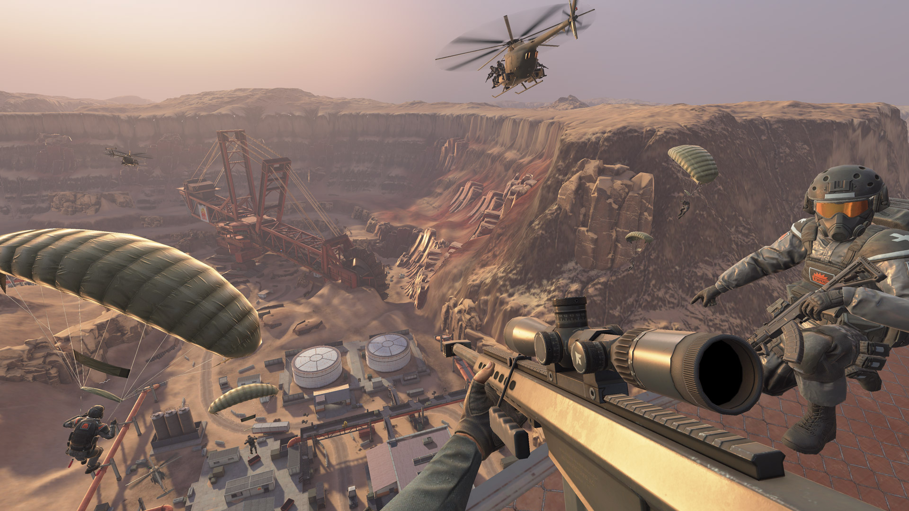
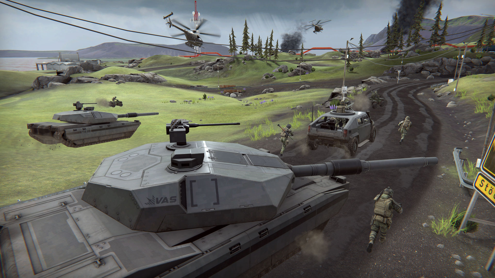
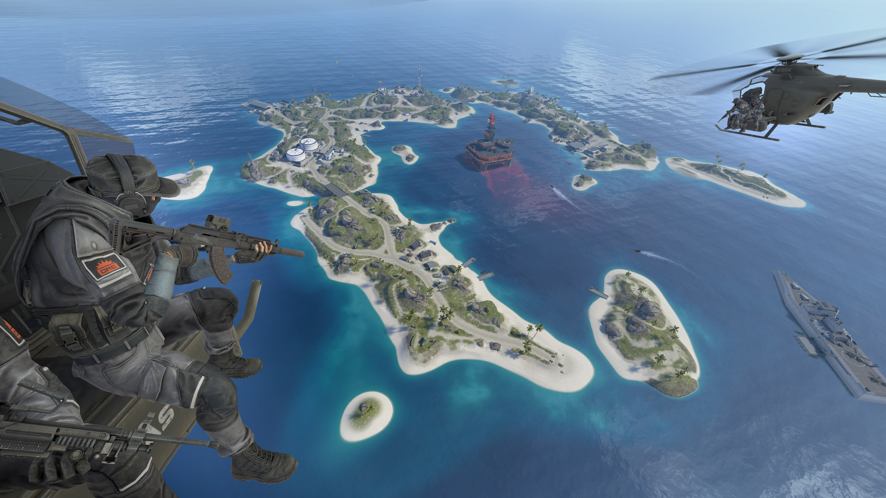
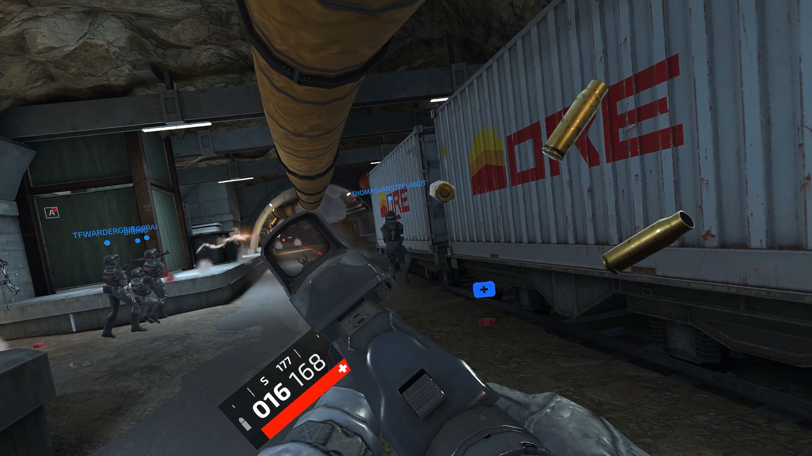

Forefront
Massive 32-player battles across a variety of expansive semi-destructive environments in VR!

About
Forefront is my first professional green field project where I saw the project through from prototyping, through production, through early access release, full release and after. It was incredible seeing the project come that far and it was awesome to contribute to so many aspects of the game.
I started working on Forefront with working on optimisation and backend graphics. I worked on the destruction system of buildings and also contributed a lot to 'MapTools' which was >our pipeline to go from a normal editable scene to a heavily optimised, built scene. In this time period I also worked on Blender tooling, internal spectator (for promo material), boat prototyping and researching if certain technologies could help us (application SpaceWarp, fusion interest system).
After that, there was not a lot of need for tooling anymore, so I moved to gameplay related topics. I worked on virtual stock, touchable UI revamp/refactor, left handed support, map voting and a couple of iterations of the map variant system.
I also worked on quite a bit of UI elements, but those I didn't list as they are individually not that note worthy, but wanted to mention them as a group anyway.
Another noteworthy thing is that I proposed and was responsible for the design of the supporter pack DLC. Internally there was some struggle on how to properly add micro transactions and my perspective on the matter that I shared with a colleague snowballed into me making a full pitch with slides to show to management. We released the supporter DLC with a lot of positive responses and another stream of revenue.
Screenshots



